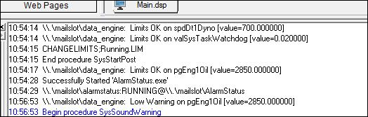

iTest User's Guide
Limits and Warnings are iTest's method of providing both safety checking and some event-based processing of actions based on a channel reaching a user-defined value or set of values. Each scalar numeric channel in iTest can have up to four limit ranges configured, and each range can have a defined action that occurs when the channel's value crosses into that range. These ranges can be changed dynamically from a test or manually from certain screens in the operator console.
The LimitsVer= powertek.ini setting is used to determine if your solution is using legacy limits. By default, the LimitsVer= powertek.ini setting will be set to LimitsVer=3.2. Some features may not be available when using legacy limits, and the behavior for managing limits and limit groups may differ. For example, SolutionBuilder's Limit Groups editor will be in read-only mode when using legacy limits.
The following behaviors occur when LimitsVer=3.2:
All new iTest installations should have LimitsVer=3.2 This allows complete control over which channels are active and also the activation timing for each limit group, both without having to write custom VCL. This is the preferred method for managing groups of limits.
Limit attributes are fields that are associated with each channel in the RDB. The fields used specifically by the limit system are as follows:
Limit Attribute Descriptions
| Field Name | Type | Description |
| Limits Active | 1 OR 0 | If 1, then limits are currently active for this channel. |
| Limit Status | Float | The current limit state of a channel: 0 = OK, 1 = Low Warning, 2 = High Warning, 3 = Low Limit, 4 = High Limit. |
| Low Limit Action | String | The name of a procedure or schedule to run. |
| Low Warning Action | String | The name of a procedure or schedule to run. |
| High Warning Action | String | The name of a procedure or schedule to run. |
| High Limit Action | String | The name of a procedure or schedule to run. |
| Low Limit | Float | Any valid value. |
| Low Warning | Float | Any valid value. |
| High Warning | Float | Any valid value. |
| High Limit | Float | Any valid value. |
| Low Limit Ignore Time | Float | The amount of time that iTest waits after the channel value goes below its Low Limit/Low Warning value before starting the specified limit action. The default value is 0. iTest starts accumulating the Low Limit Ignore Time when the database channel value is equal to or below the specified low limit/low warning. The Ignore Time is reset to zero when the database channel value goes above the low limit/low warning. This setting is designed to reduce nuisance limits on noisy signals. |
| High Limit Ignore Time | Float | Same as low limit ignore time, but it applies to the value exceeding the High Limit/High Warning value. |
As a channel's value crosses into a new limit range, messages are sent to the iTest message queue. Messages have the following format:
Limits <status> on <channel name> [value= <channel value>]
Where:
Example of Limit Violation Message

In addition to messages, limits and warnings cause a channel's displayed value to change colors depending on its current status. If limits checking is currently enabled, almost all locations in iTest will display the value with the following pre-defined colors:
Limit Colors
| Status | Color |
| High/Low Limit | Red |
| High/Low Warning | Yellow |
| Normal | Green |
In iTest Console, limit colors are visible on all iTest display objects (e.g., ADTBar, iTest Console Signal Bar, and AlarmStatus). In AutomationPanel, limit colors are visible on panels, including the Bar, Gauge, Chart, Tile, Channel List, and Data Quality panels.
Limit checking is enabled/disabled through the following methods:
Limit settings can be configured in the Channel Definitions editor or the Limit Groups editor. The Channel Definitions editor allows you to configure the default limit settings; these settings will be used in the DEFAULT.LIM limit group, which is used as the foundation for creating and modifying limit groups. The Limit Groups editor allows you to configure the limit settings for each channel without modifying the channel definition file. Use the descriptions in the table below to configure the limit settings.
Limit Setting Descriptions
| Field | Description |
| Low Limit | The lowest value at which the test specimen should run for the given channel. |
| Low Limit Action | The action iTest performs when the associated low warning limit is met. |
| Low Warning | The value at which a warning is issued, indicating that the channel value is approaching its low limit. |
| Low Warning Action | The action iTest performs when the associated low warning limit is met. |
| High Warning | The value at which a warning is issued, indicating that the channel value is approaching its high limit. |
| High Warning Action | The action iTest performs when the associated high warning limit is met. |
| High Limit | The highest value at which the test specimen should run for the given channel. |
| High Limit Action | The action iTest performs when the associated high warning limit is met. |
| Low Limit Ignore Time (s) | The amount of time that iTest waits after the channel value goes below its Low Limit/Low Warning value before starting the specified limit action. |
| High Limit Ignore Time (s) | The amount of time that iTest waits after the channel value exceeds the High Limit/High Warning value before starting the specified limit action. |
| Low Limit Warning Ignore Time* | The amount of time that iTest waits after the channel value goes below its Low Warning value before starting the specified limit action. A blank value indicates that the High Limit Ignore Time will be used. |
| High Limit Warning Ignore Time* | The amount of time that iTest waits after the channel value goes below its High Warning value before starting the specified limit action. A blank value indicates that the Low Limit Ignore Time will be used. |
If using the New/Edit Channel Dialog to configure limit settings, the Edit Action button is activated if a VCL function is selected. When active, the Edit Action button opens the Function Prototype Guide to allow easy modification of the VCL function's arguments.
Limit groups are used to change the high and low range for channels during different operating conditions for the test environment. For example, the default limits for a channel may be set in a wide range in order to catch abnormal operating conditions when the engine or speciment is not running. As a test proceeds, different limit groups may be applied to make that range smaller.
Limit groups can be managed in Test Manager or SolutionBuilder by using the Limit Groups editor. For more information, refer to the following documents:
Data_Engine handles the following limit mailslot messages:
All limit mailslot messages are handled by Data_Engine. They are as follows:
Mailslot Messages
| Mailslot Message | Description |
| Limits Activate ALL | Start checking limits. Any individual channel de-activated will still be de-activated. |
| Limits Activate <channelname> | Turn on limits checking for a channel that previously had limits de-activated with Limits Deactivate <channelname>. |
| Limits Deactivate ALL | Stop checking limits. Any individually de-activated channel will still be de-activated when Limits Activate ALL is sent. |
| Limits Deactivate <channelname> | Turn off limits checking for that channel only. |
| Limits Group Apply Default | Apply the default limit group. |
| Limits Group Apply groupname | Apply the specified limit group. |
| Limits Reactivate | Turn on limits checking for all channels that previously had limits de-activated with Limits Deactivate <channelname>. |
The following powertek.ini settings are used to enhance or modify the behavior of limits: LimitsActiveOnStartup, LimitsRMISS, LimitsVer, and NonLimitsColor. For more information on each setting, refer to its entry in the iTest INI Options and iTest Advanced INI Options documentation.
AlarmStatus is an important program for the operator to use at runtime to monitor and manage the list of channels with limits while iTest is running. Depending upon the options set in your solution, the operator can have a different level of control using AlarmStatus. Some locations allow the operators to add and delete channels with limits, temporarily disable some channels and edit limit ranges and actions, all while iTest is running. For more information, refer to the AlarmStatus documentation.
AlarmStatus is controlled by settings in the powertek.ini file. These settings are described below:
Alarm Status Descriptions
| Option | Description | Default Value |
|---|---|---|
| AlarmStatusEdit | When set to true, limits can be edited through the AlarmStatus interface. This will add a right-click edit option on the AlarmStatus. | FALSE |
| AlarmStatusLimitControl | Enable/disable the ability to activate/deactivate alarms from the screen. | FALSE |
| AlarmStatusDisplayAlias | AlarmStatus shows Alias by default. You can turn this option off by setting this value to FALSE. | TRUE |